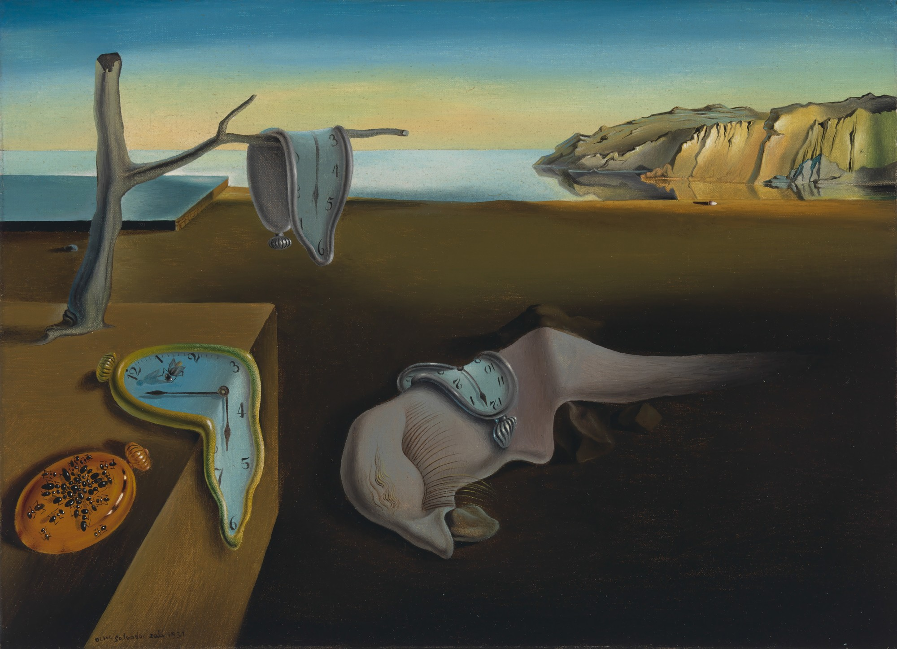
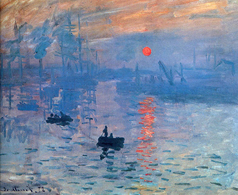

Here are some benefits of drawing and why you should try it:
-It enhances creativity
-It strengthens focus and strategic thinking
-It helps coordination
-It helps you become more detail-oriented
-It relieves stress
-And many more...!
Drawing is a great hobby for all ages and I recommend it to everyone!
Some famous artworks:
-The Starry Night by Vincent van Gough

-The Persistence of Memory by Salvador Dalí

-Impression Sunrise by Claude Monet
